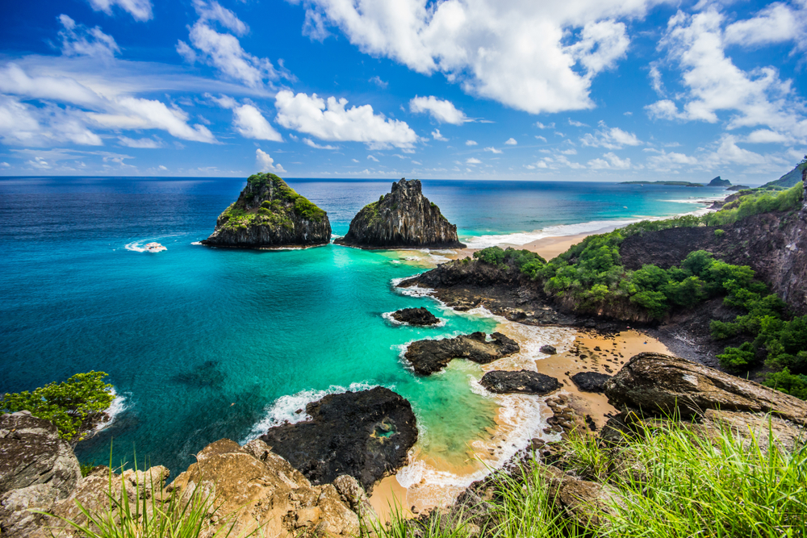

É um dos lugares mais lindos do Brasil. Um parque marinho e santuário ecológico protegido com uma lilha costeira recortada e vários ecossistemas. É reconhecida pelas seus praias pouco urbanizadas e por atividades de mergulho e snorkeling. As tartarugas marinhas, as raias, os golfinhos e os tubarões dos recifes nadam nas águas quentes e cristalinas.
Aqui você encontrará as três páginas solicitadas para continuar esta avaliação.
Voltar para a Página 1